League of Legends é um nome que automaticamente está associado à Riot Games. A empresa surgiu em 2006 na cidade de Los Angeles, nos Estados Unidos, fundada por Brandon "Ryze" Beck e Marc "Tryndamere" Merril. O grande propósito dos dois era trazer jogos inovadores e focados no ambiente multiplayer. O primeiro título, League of Legends, foi anunciado oficialmente pela empresa no dia 7 de outubro de 2008, mas ele já estava em processo de desenvolvimento desde meados de 2005. Inspirado pelo sucesso de Defense of the Ancients no Warcraft 3: Frozen Throne, a Riot Games trouxe dois dos grandes nomes que estiveram atrás do mapa: Steve "Guinsoo" Feak, que desenvolveu as primeiras versões do mod, e Steve "Pendragon" Mescon, responsável pelo site oficial de DotA — e acusado posteriormente de tentar boicotá-lo. A fase Beta de League of Legends estreou no dia 10 de abril de 2009, se estendendo até o dia 26 de outubro do mesmo ano. No exato dia seguinte, League of Legends seria lançado oficialmente para PC, contando com 40 campeões e dois modos de jogo: o clássico "cinco-contra-cinco" em Summoner's Rift e um "três-contra-três" em Twisted Treeline.
 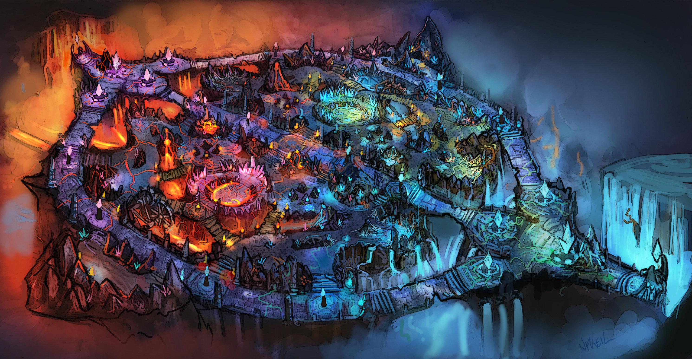
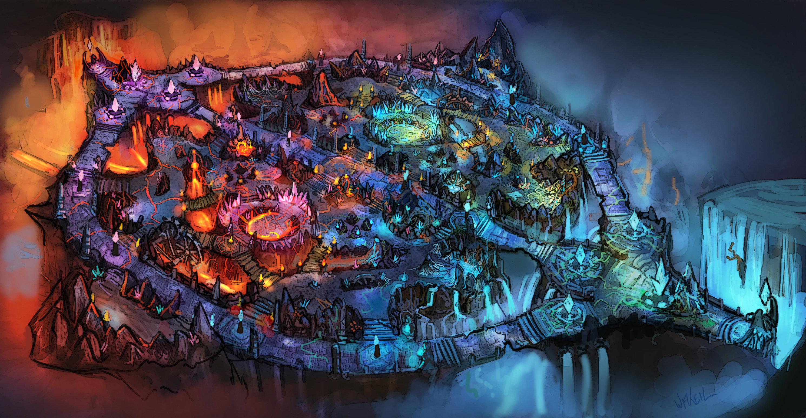
Assassino: campeões que têm como especialidade abater
um campeão o mais rápido possível.Esses campões possuem alto dano e
costumam ser difíceis de serem abatidos se adquirirem vantagem. Alguns
campeões assassinos:
Akali, Fizz, Kassadin, Katarina, LeBlanc, Master Yi, Nidalee,
Rengar e Zed.
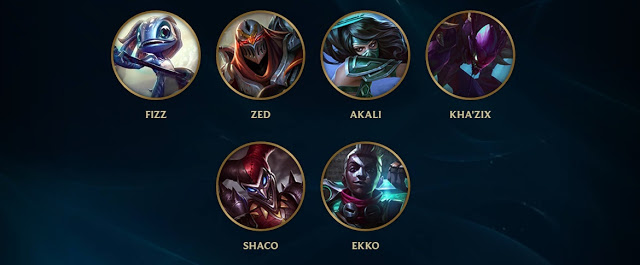
Atirador: campeões que geralmente são
fracos no começo, mas tornam-se grandes carregadores caso consigam
alguns abates. Possuem pouca vida e armadura, mas uma alta velocidade
de ataque. Alguns campeões atiradores:
Ashe, Caitlyn, Ezreal, Kai'Sa, Jinx, Miss Fortune, Varus, Vayne e
Xayah.
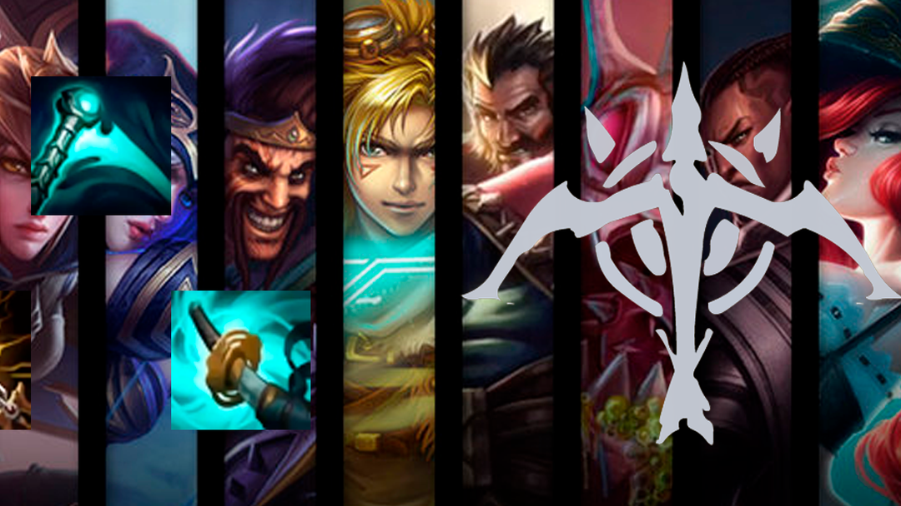
Lutador: campeões que misturam os atributos de dano e defesa. Alguns campeões
lutadores:
Aatrox, Camille, Fiora, Hecarim, Irelia, Jax, Riven, Vi e Yasuo.
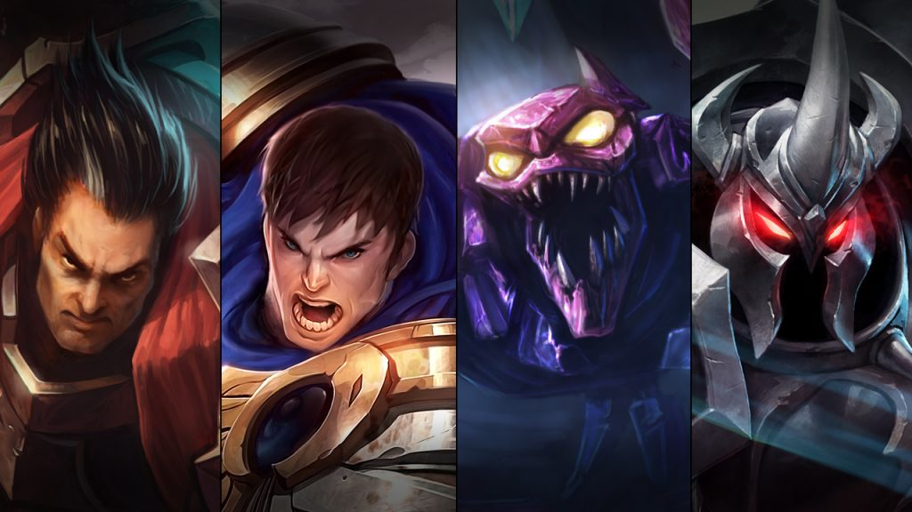
Suporte:
campeões que possuem habilidades para ajudar o resto do time. Alguns
campeões suportes:
Bardo, Janna, Karma, Lulu, Nami, Rakan, Sona, Soraka, e Thresh.
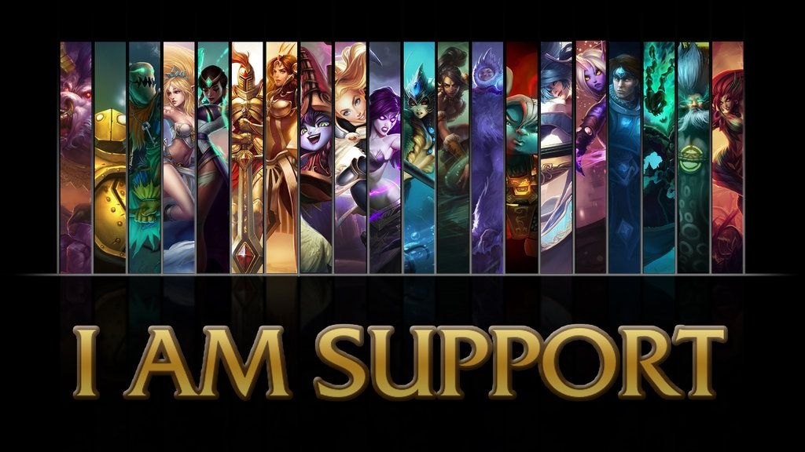
Mago: campeões com poderosas habilidades mágicas, mas pouca defesa.
Algumas habilidades causam grande quantidade de dano em um curto
período de tempo, enquanto outras causam dano ao longo do tempo.
Alguns campeões magos:
Ahri, Annie, Lux, Orianna, Swain, Syndra, Taliyah, Veigar e
Xerath.
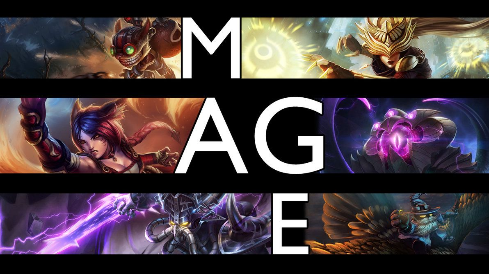
Tanque
: campeões focados em iniciar lutas e receber todo o dano do time
adversário devido a alta defesa que possuem. Alguns campeões
tanques:Amumu, Cho'Gath, Leona, Maokai, Nautilus, Ornn, Poppy, Sejuani e
Shen.
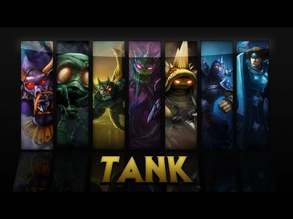
Existem milhares de torneios do jogo, tanto regionais quanto mundiais. A popularidade é tão grande que as finais chegam a ser realizadas em estádios de futebol. Nas finais do World Cyber Games de 2010, houve um torneio de League of Legends, em que equipes da China, Europa e das Américas competiram. A equipe Counter Logic Gaming da América do Norte venceu o torneio, ganhando um prêmio de US$ 7,000.[49] Em 2014, a final regional do Campeonato Brasileiro de League of Legends (CBLOL) foi no estádio Maracanãzinho, no Rio de Janeiro, sendo vencedora a equipe da KaBuM e-Sports, a primeira equipe brasileira a ter participação no campeonato mundial do jogo. De quatro partidas, eles conseguiram uma vitória contra a campeã regional europeia Alliance (que acabou sendo desclassificada). Já em 2015, a equipe da paiN Gaming levou o título da final regional no Allianz Parque com mais de 12 mil pessoas e seguiu para o International Wild Cards, onde conquistou a vaga para o campeonato mundial de 2015 derrotando a Kaos Latin Gamers (KLG) na final por 3 a 0 (md5).

O Tutorial é o primeiro tipo de jogo válido aos novos jogadores. O tutorial é jogado no Howling Abyss e inclui um treinamento de batalha para que os jogadores tenham as noções básicas do jogo. Co-op vs. AI é válido aos novos jogadores após completarem ou optarem por sair do Tutorial. Pode ser jogado no Summoner's Rift. Os times são compostos por cinco ou três jogadores contra bots. Custom Games permitem que os jogadores joguem qualquer modo de jogo com qualquer combinação de campeões. Normal Matchmaking é válido aos jogadores que alcançaram o nível 6 e é utilizado um sistema automático para formar os times, para se jogar com pessoas com a mesma experiência. Ranked Matchmaking é válido aos jogadores que alcançaram o nível 30. É utilizado um sistema semelhante ao do Normal Matchmaking e permite ao jogadores competirem entre si, pois essas partidas são contabilizadas no sistema competitivo do jogo. Team Matchmaking permite que a equipe seja pré-formada para competir contra outra equipe com habilidade semelhante.
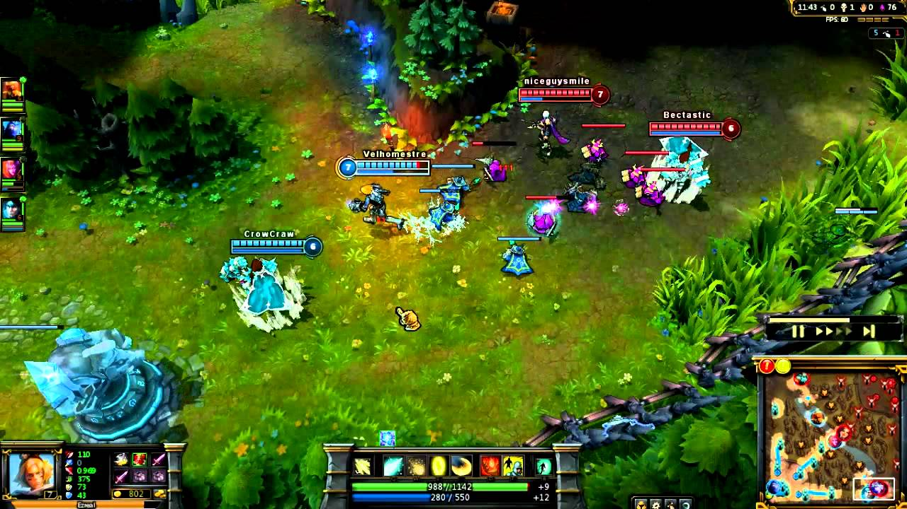Em todos os modos de jogo, os jogadores controlam personagens chamados de campeões, escolhidos ou atribuídos em cada partida, que possuem habilidades únicas.[15] Os campeões começam cada partida com um nível baixo (nível um em Summoner's Rift e Twisted Treeline, e nível três para Crystal Scar e Howling Abyss), e, então, vão adquirindo experiência ao longo do jogo até alcançar o nível máximo de 18. Adquirir um novo nível na partida permite que o jogador desbloqueie outras habilidades especiais do campeão. Os jogadores também começam cada partida com uma baixa quantidade de ouro, podendo ganhar ouro adicional durante o jogo de formas diferentes: abatendo personagens não jogáveis, como minions e monstros, abatendo ou ajudando a abater os jogadores adversários, destruindo as torres inimigas, passivamente ao longo do tempo e através de itens ou habilidades do campeão. Esse ouro pode ser gasto durante o jogo para comprar itens que aumentam as habilidades de cada campeão, como ataque, defesa, armadura e etc. A experiência do campeão, o ouro acumulado e os itens comprados são específicos para cada jogo. Dessa forma, em cada nova partida, os jogadores começam com a mesma situação em relação a equipe adversária.
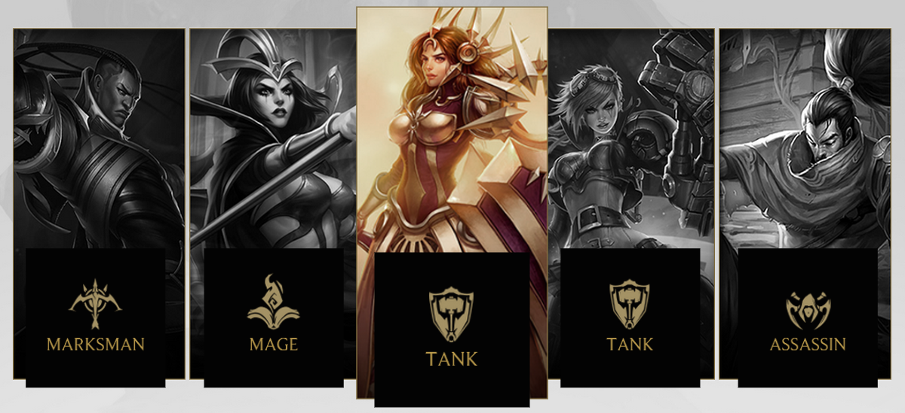 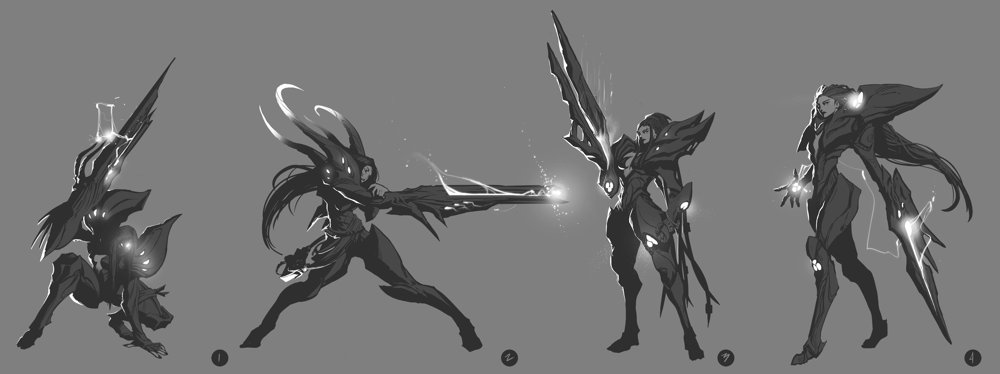